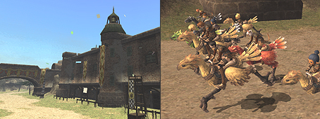

The exciting new Chocobo Racing feature has been introduced!
Related Information>>

New monsters known as “Goblin Bounty Hunters” will now appear along the coastlines of the following areas:
Valkurm Dunes/Batallia Downs/Buburimu Peninsula/Qufim Island
The names of certain monsters appearing in Nyzul Isle have been changed.
Cannonball → Friar's Lantern
Bifrons → Friar's Lantern
Several new synthesis recipes have been added.
An event during the quest “Promotion: Chief Sergeant” progressing in an incorrect manner under certain circumstances.
An incorrect message being displayed when talking to the NPC Shahayl in the Nyzul Isle staging point.
An incorrect message being displayed when talking to the Chocobo Racing Association NPCs in San d’Oria, Bastok, and Windurst.
The inability to correctly exit from Assault and Salvage areas when under the effect of the Poroggo ability “Frog Song.”
The effect of the monster ability “Granite Skin” not functioning as intended.
The physical blue magic spell “Disseverment” being incorrectly classified as a magical effect and being usable with the “Burst Affinity” ability.
The inability to place other furnishings on top of the “wardrobe” item when using the Layout function in your Mog House.
The item help text for “gil” not being displayed.
The top Auto-Translate Dictionary entry under Text Commands in the French and German versions being blank. If this entry was selected, only the red and green brackets would be displayed.
The game occasionally freezing when displaying a message in the Friend List.